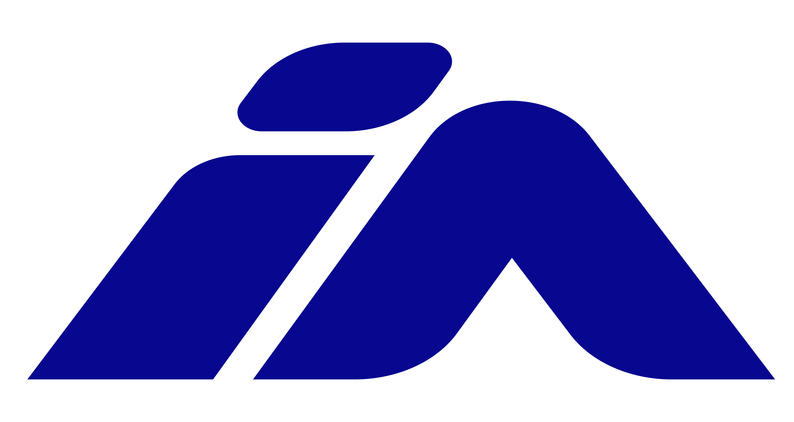

Guia de identidade visual e padrões de interface para todos os projetos da IANorth. Consulte antes de iniciar qualquer tela, documento ou material.
Cinco variações disponíveis para diferentes contextos. Escolha a versão adequada ao fundo e à aplicação. Nunca distorça, recorte ou altere as proporções.
Quatro variações do símbolo IA para avatares, favicons, app icons e contextos onde o logotipo completo não cabe. Mínimo recomendado: 24×24px.


Tokens semânticos em vez de cores brutas. Cada cor tem propósito e significado. Nunca use slate-800 ou similares nos componentes.
Montserrat é a fonte oficial da IANorth em todos os projetos — interfaces, documentos, apresentações, materiais externos. JetBrains Mono para código e dados técnicos.
✗ Nunca use
Inter, Arial, Roboto, System UI, ou qualquer fonte genérica nos projetos IANorth. A transição para Montserrat é obrigatória.
Padrões visuais reutilizáveis. Cada componente usa tokens semânticos, nunca cores brutas do Tailwind.
Visão Computacional Industrial
Padrões obrigatórios para consistência entre projetos e desenvolvedores da equipe.
bg-surface-secondary
text-content-primary
border-border-default
text-status-success
bg-operation-live
bg-slate-800
text-white
border-gray-700
text-green-500
bg-red-600
loteId, peakCount, targetCount
funcionarioMatricula
statusFardo, contagem
itemId, maxValue, goalNumber
userId
objectStatus, counter
O documento de identidade de marca usa o tema light — transmite profissionalismo e é adequado para impressão, propostas comerciais e apresentações externas. Os produtos e dashboards industriais usam dark theme — reduz fadiga visual em ambientes de galpão e monitores industriais.
Propostas, portfólios, apresentações, materiais externos, documento de design system.
Dashboards, interfaces de câmera, telas de controle, sistemas 24/7 em ambiente de fábrica.
IANorth Tecnologia · Brand & Design System v1.1 · Junho 2026
Consulte este documento antes de iniciar qualquer projeto de interface.
Fonte: Montserrat · Tokens: tailwind.config.js · CSS: ianorth-theme.css